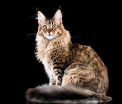
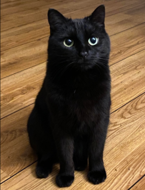
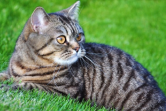
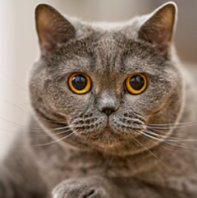
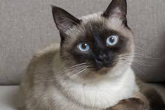
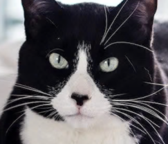
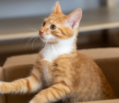
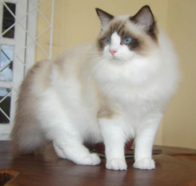
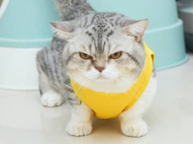

Cat Cards
Maine Coon

Personality
They are known as “gentle giants”. They are highly affectionate, intelligent, and dog-like, often enjoying water and playing fetch.
Black Cat

Personality
Affectionate, intelligent, and highly social companions. They are also playful, loyal, and sometimes quite vocal.
Tabby Cat

Personality
Friendly, affectionate, and highly intelligent nature, often acting as loyal and curious companions. They are generally active, playful, and sometimes mischievous. Their personalities are adaptable, often described as charming and, at times, bold.
British Shorthair

Personality
Calm, easygoing, loyal yet undemanding nature. They are affectionate, low-maintenance, and adapt well.
Siamese Cat

Personality
Intelligent, affectionate, and highly vocal, acting as extroverted, dog-like companions that bond deeply with their owners. They are notorious for "chatting" with loud, low-pitched voices and can suffer from separation anxiety if left alone too long, often demanding constant attention and interaction.
Tuxedo Cat

Personality
They are known to be intelligent, affectionate, vocal, and highly active. They are frequently described as possessing a "dog-like" loyalty and charismatic, sometimes dramatic, personalities.
Orange Cat

Personality
Affectionate, sociable, and highly energetic personalities, often described as "Velcro cats" for their tendency to bond closely with owners. They are chaotic or "unhinged" troublemakers. They are also frequently affectionate, vocal, and intelligent companions, sometimes reported as more trainable and friendly.
Ragdoll Cat

Personality
Docile, affectionate, and "puppy-like" nature, often going limp with relaxation when held. They are highly people-oriented, gentle, and intelligent, often follow owners from room to room. Their temperament is calm, laid-back, and rarely aggressive.
Munchkin Cat

Personality
Sweet, affectionate, and playful "forever kitten" nature, often characterized by high energy, intelligence, and a "dog-like" tendency to follow owners. Despite short legs caused by a natural genetic mutation, they are active, fast runners, and curious, often stealing small items.